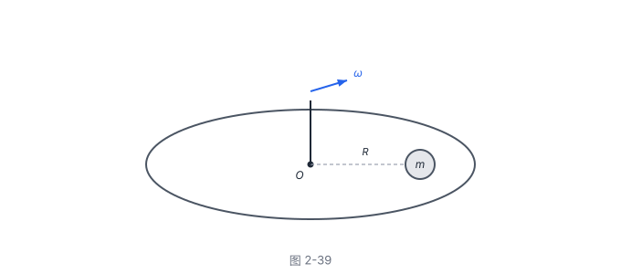
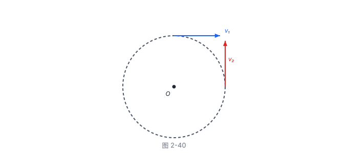
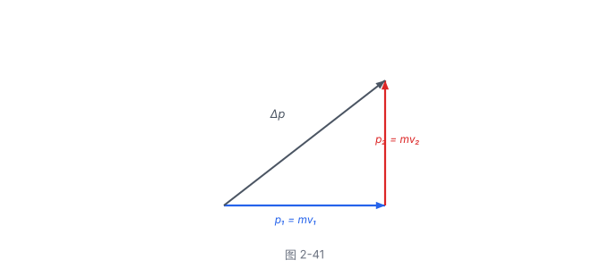
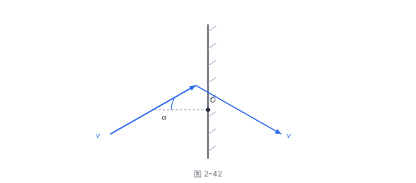
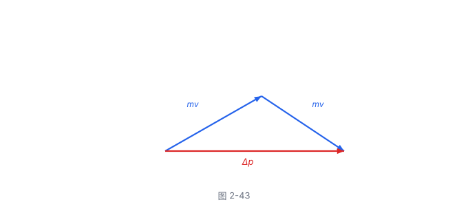
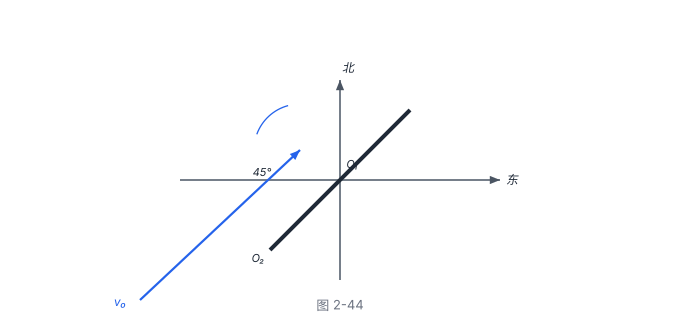
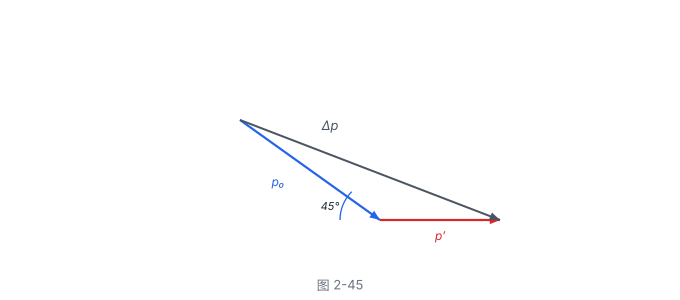

四、用动量矢量三角形法巧解动力学问题
例 1转台上木块的摩擦力冲量
如图 2-39 所示，在以角速度 \( \omega \) 匀速转动的平台上有一质量为 \( m \) 的小木块，木块距转轴的距离为 \( R \)，当木块转过 \( \dfrac{1}{4} \) 圆弧时，木块所受摩擦力的冲量是多少？

解木块受重力 \( mg \)、支持力 \( N \) 和静摩擦力 \( f \)。木块做匀速圆周运动的向心力由静摩擦力提供。如果要求静摩擦力 \( f \) 的冲量，由动量定理可知，只要求出木块的动量变化量 \( \Delta p \) 就行了。
设木块的线速度为 \( v \)，则有 \( v = \omega R \)。
当木块转过 \( \dfrac{1}{4} \) 圆周时，线速度的方向改变 \( 90^\circ \) 角，如图 2-40 所示。木块的初动量 \( p_1 = mv_1 \)、末动量 \( p_2 = mv_2 \)，且 \( v_1 = v_2 = v \)，动量的变化量为 \( \Delta p \)。作 \( p_1 \)、\( p_2 \)、\( \Delta p \) 的矢量三角形如图 2-41 所示，故有


由动量定理得，摩擦力的冲量为
例 2气体分子碰壁的冲量
以 \( v = 600\,\mathrm{m/s} \) 的速率飞行的二氧化碳气体分子，与容器壁做弹性碰撞，分子速度的方向和容器壁法线方向之间的夹角为 \( \alpha = 60^\circ \)，如图 2-42 所示。求容器壁所受力的冲量。

解容器壁所受力的冲量，在数值上等于气体分子所受力的冲量，由动量定理可知，即等于气体分子的动量沿力的作用方向上的变化。作动量的矢量三角形如图 2-43 所示，则有

由图 2-43 可知 \( \dfrac{1}{2} \Delta p = mv \cos\alpha \)，而分子的质量为 \( m = \dfrac{\mu}{N} \)。式中 \( \mu \) 是二氧化碳气体分子的摩尔质量，且 \( \mu = 44 \times 10^{-3}\,\mathrm{kg} \)，\( N \) 为阿伏伽德罗常数，且 \( N = 6.023 \times 10^{23} \)。所以冲量为
例 3帆船航行的平均阻力
一艘木帆船，帆的面积为 \( S = 8\,\mathrm{m^2} \)，当船由南向北行驶时，恰好刮东南风，相对船的风速为 \( v_0 = 8\,\mathrm{m/s} \)，此时帆的平面跟风向垂直，这时，即使不用人力，船也能由南向北以 \( 2\,\mathrm{m/s} \) 的速度匀速直线行驶。设风吹到帆面后，气流跟帆面平行的方向逸向四周。试求此船行驶过程中受到的平均阻力的大小和方向（空气密度为 \( \rho = 1.29\,\mathrm{kg/m^3} \)）。

解示意图如图 2-44 所示，\( O_1O_2 \) 表示帆的平面。由于帆受到空气的冲力作用，因而使船具有了向前运动的「牵引力」，当船体匀速前进时，船体受到的阻力跟牵引力平衡。因此只要求得风对帆的冲力就知道了阻力。为此可应用动量定理，以某一部分流动的空气（风）为研究对象，作用前它的动量为 \( mv_0 \)，方向指向西北；作用后这部分空气具有两种运动：一是具有跟原来方向垂直的速度 \( v_\perp \)，二是具有跟船相同的分速度 \( v' \)，因此相应的动量也分为 \( p_\perp \) 和 \( p' \)。其中引起向垂直方向变化的动量的相应冲量跟帆面平行，因而不产生「牵引力」的作用效果。只有引起向 \( p' \) 变化的相应冲量才会引起整个船体动量的变化。动量变化关系矢量三角形如图 2-45 所示。

设单位时间内吹到帆面上空气的质量为 \( m \)，则有 \( m = S v_0 \rho \)。作用前的动量 \( p_0 = m v_0 = S v_0 \rho v_0 \)，作用后的分动量 \( p' = m v' = S v_0 \rho v' \)。由图 2-45 可知，应用余弦定理得
所以
由 \( F \Delta t = \Delta p \)，\( \Delta t = 1\,\mathrm{s} \) 得
这一冲力是帆对空气（风）的反作用力，反之，空气对帆的作用力 \( F' = -\bar{F} \)，方向跟 \( \Delta p \) 的方向相反，而阻力 \( f = -F' = \bar{F} \)，表明船体所受阻力大小为 \( 556.1\,\mathrm{N} \)，方向跟 \( \Delta p \) 方向相同。